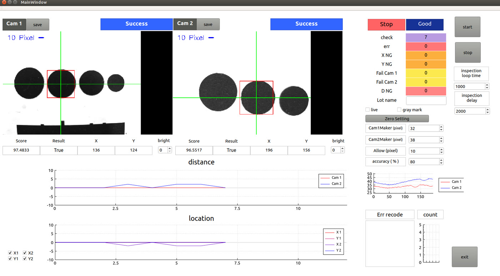

All projects
Industry project · UNIEYE · Feb–Jul 2020
Pattern inspection with two industrial cameras
An inspection program on a Jetson Nano. It found circular marks in images from two Basler cameras, measured where they sat, and passed or failed each part.
- Role
- User interface and communication
- Team
- 2 students
- Hardware
- Jetson Nano, 2 × Basler acA2500-14gm
- Stack
- C++, Qt

How it worked
- 1 Capture Frames were downscaled from 2592×1944 to 324×243. At 648×486 the Jetson Nano could not keep up.
- 2 Filter A Gaussian filter and Canny edge detection, both implemented by hand.
- 3 Find circles Contours with a radius of 10–150 px, at least 15 px apart, whose distance from the center varied by less than 15%.
- 4 Judge The mark's score and X/Y position were checked against a zero-set reference, an allowed pixel offset and an accuracy threshold.
My part
On a team of two, my part was the Qt interface shown above and the communication layer.
The communication layer linked the Jetson Nano to a host PC. The system was built as a prototype.